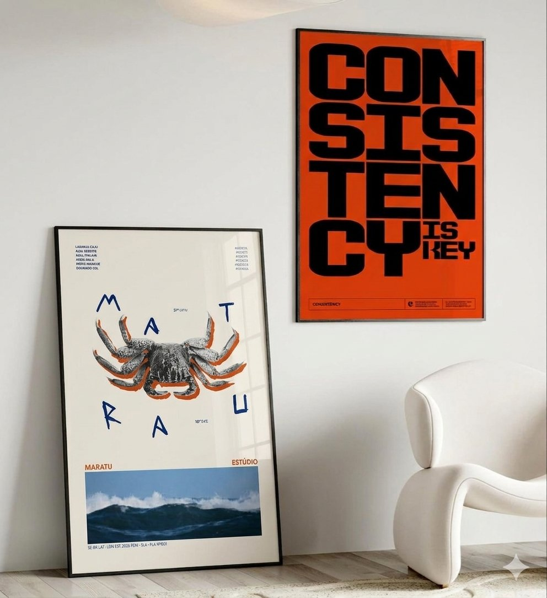

02 / coleções
em circulação.

vol. 01
origens
os ícones de aracaju reinterpretados como impresso. o arco, o mercado, a carranca.
ver coleção
vol. 02
mangue haus
composições abstratas tiradas das texturas do mangue, da luz do litoral, das cores da feira.
ver coleção

vol. 03 · em breve
objetos
o primeiro volume em três dimensões. peças impressas e montadas no estúdio.
antecipar